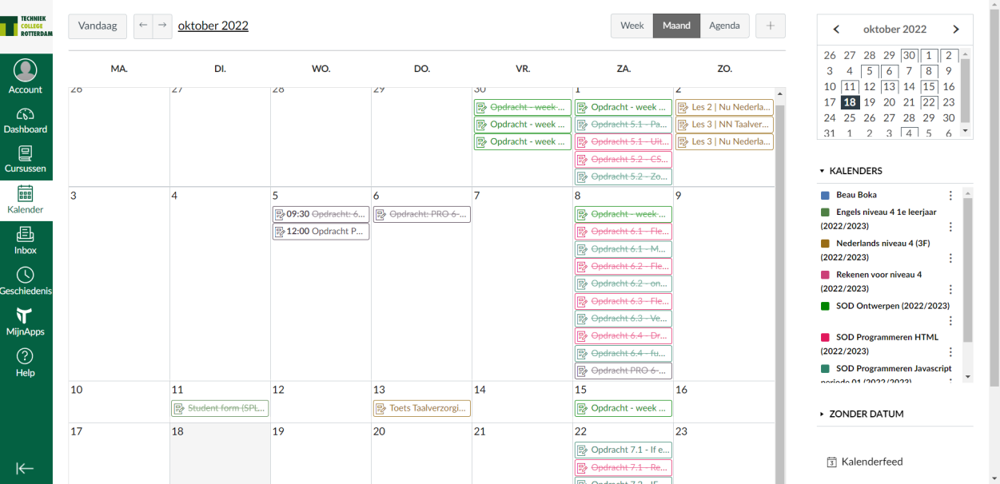
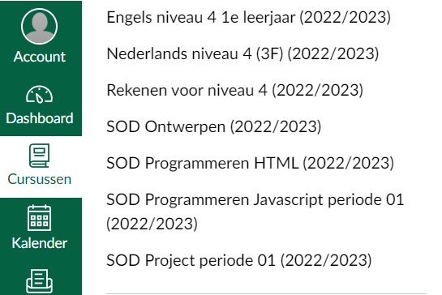
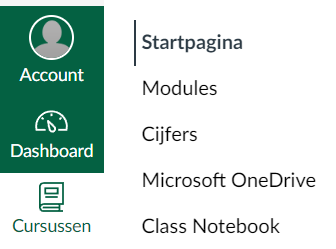
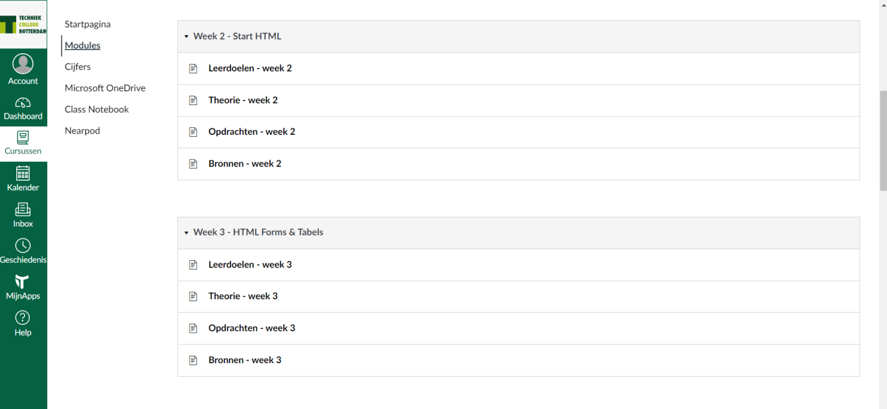
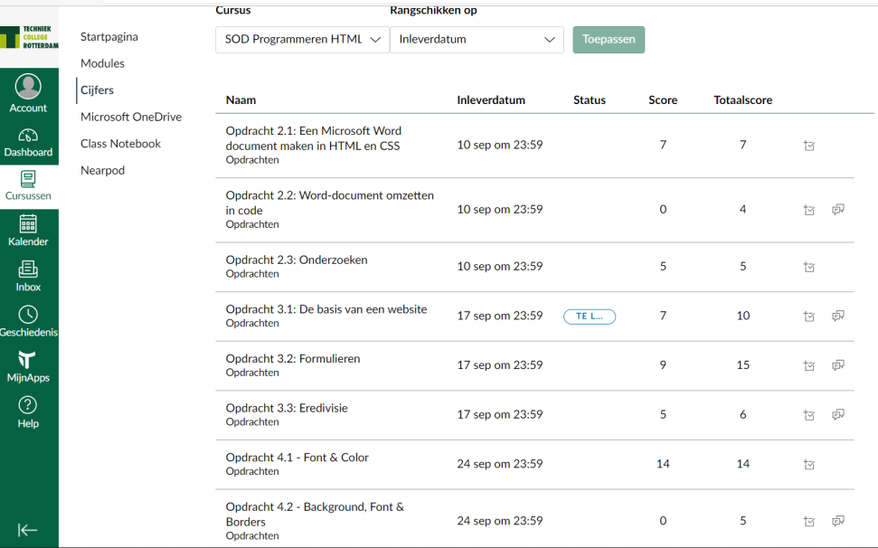

Canvas is een app die wij gebruiken voor al ons school werk, hier kunnen wij al de verschillende cursussen zien en hier kunnen wij ook via canvas bij. We kunnen hier ook meer dingen zien dan alleen onze cursussen, wij kunnen dingen zien zoals je kalender of je inbox.
Bij ons kalender kunnen wij ons hele rooster zien en ook tegelijk ons huiswerk, we zien bijvoorbeeld een strook op een bepaalde dag met ons huiswerk, wij kunnen daarop klikken en dan worden we automatisch doorgestuurd naar de opdracht in de cursus tab 
we kunnen nog iets dieper ingaan op de cursus tab, in de cursus tab hebben wij keuze tussen de modules en de cijfers. uiteraard laat de cijfers tab onze cijfers/punten zien die wij hebben gehaald op ons huiswerk, de modules tab bestaat uit theorie die wij in de les(sen) hebben behandeld en ook ons huiswerk.
   